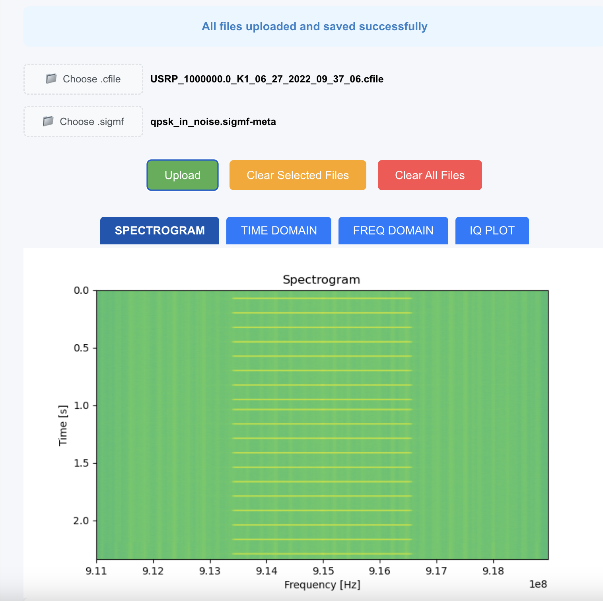
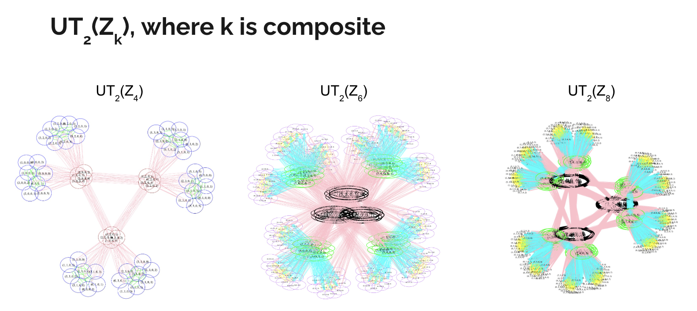
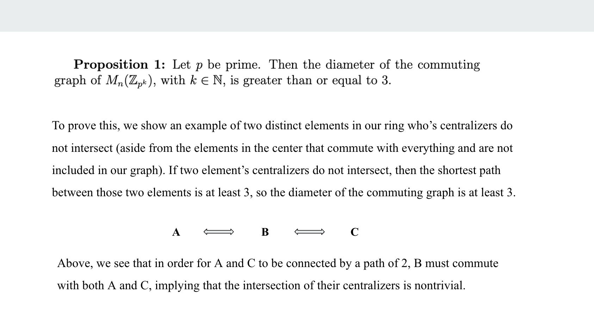
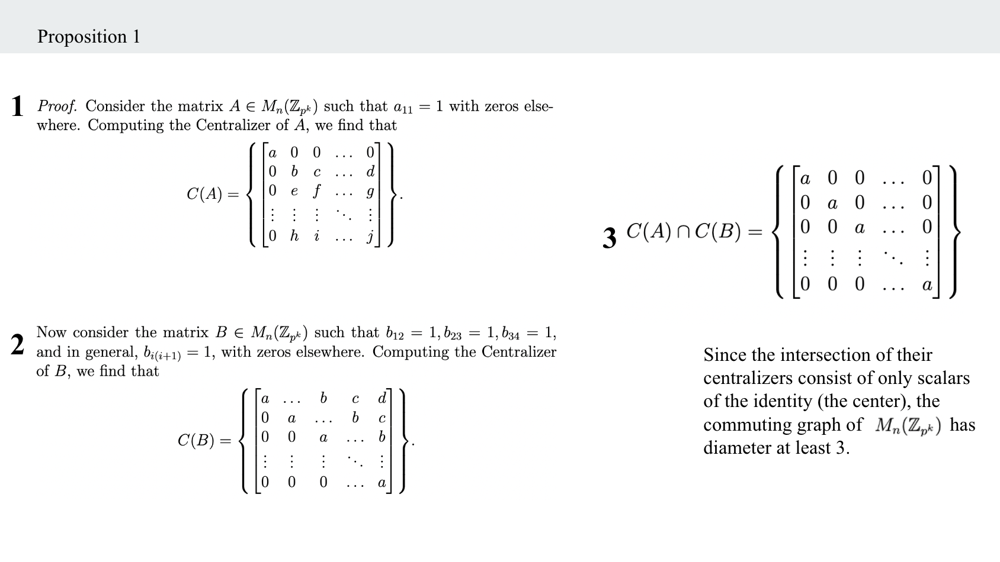
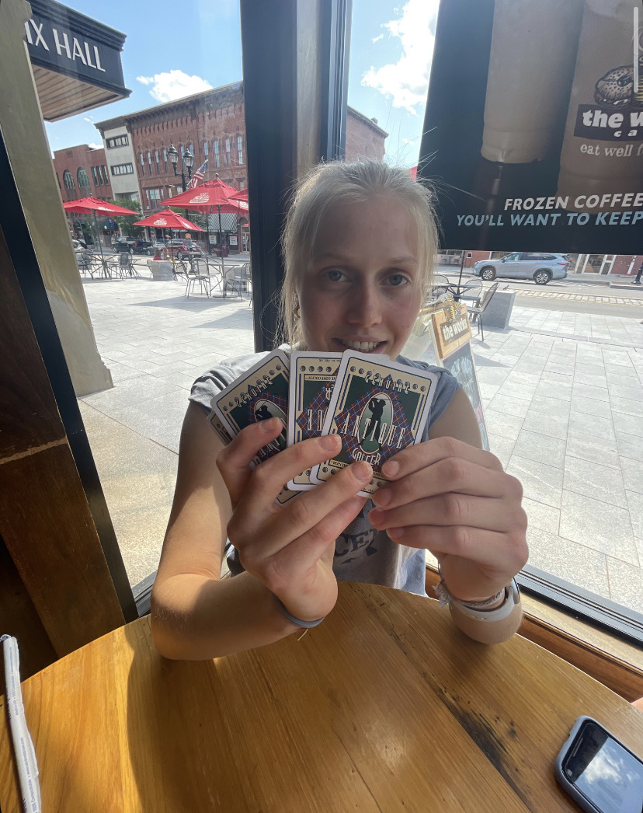

My Website!
This website was coded completely from scratch using html, CSS and JavaScript. I thought building a website would be a good opportunity to enhance my profile as an applicant while also learning some new technical skills. It was my first real experience with web development and front end development in general. I enjoy the creative aspects of web development and hope to continue to develop and add interesting features to my site.

Computer Science Capstone Project
In place of a thesis, Computer Science students at Hamilton are matched with a client that is requesting a piece of software. Students work in small groups alongside their client to develop the desired product, which is an end to end software application to solve the client's problem. This capstone project gives students exposure to the end to end development process - frontend and backend development, working with a client, meeting deadlines, interfacing with remote servers, hosting a remote database, etc. My group is creating a Website that allows our client, a Computer Networking Professor at Hamilton, to visualize and analyze radio frequency data samples. We started this project in January and plan to have it finished by the end of the semester (May 2025). Our application allows a user to upload raw IQ files containing spectrum data (or generate synthetic data), as well as a corresponding metadata file. The website then displays relevant visuals and statistics including a spectrogram, time and frequency domain plots, an IQ plot, and many statistics calculated from the metadata file. The user can then save the current file plots and information to a database and easily re-load them without re-uploading the original data file. Our next steps are to allow the user to make annotations on the visuals and implement a machine learning algorithm that can classify various types of transmissions on a spectrogram. We are using python for the backend and react for the frontend, and using MongoDB as our backend database. This project has been a great opportunity to learn new tools, learn how to integrate frontend and backend, get more comfortable developing with a group using version control tools, and communicate with a client. Check out our repo below!
Nintendo Gameboy Game Development
Semester long project developing a fully functional game to run on a Nintendo Gameboy. I programmed my game, "Fly or Die", in the Assembly language developed for the nintendo gameboy, known as DMG assembly. I created game graphics using pixel editors, and programmed all animation and gameplay in DMG assembly. Though tedious, programming in such a low level language was interesting in that I could see exactly how each line of code translated to an instruction to be executed on the hardware. I gained a much better understanding of computer architecture and hardware, as well as how programming languages are interpreted and executed. Some of the more challenging aspects in development were collision handling, updating necessary graphics within the short v-blank interrupt before the LCD reloads, and successfully polling input. In addition to developing this game, I built a gameboy emulator in python that interprets the .gb game file and runs the game as it would play on a gameboy. This was a great task to better understand how interpreters/compilers work, and was incredibly rewarding when it could successfully interpret and execute all necessary opcodes to run my game. Using an existing JavaScript emulator online, I created a website that emulates my game.
Commuting Graph Research
Below I've included snippets of my work from the math research I program I participated in last summer. The colorful graphs were generated by the Python program we developed to model the commmuting graphs of finite matrix groups and rings. After studying these groups and rings and their associated commuting graphs, we created and proved a final Theorem which was broken up into four distinct propositions, the first of which I've included below.



Machine Learning Final Project : Stroke Prediction
Linked below is a Medium post published by myself and two of my peers on stroke prediction using various binary classifiers. Given that we were working under time, computational and data quality constraints, the expectation was not a perfectly accurate classifier. Rather, it was an opportunity to demonstrate understanding of the process of building and evaluating different machine learning models - preprocessing data, tuning hyperparameters, understanding and evaluating different performance metrics, and identifying model shortcomings and ethical implications.

Gin Rummy Project
For a CS final project in 2022, I built a 2-player, interactive game of the card game Gin Rummy in C++. The project was open ended and only required that we implement and link several different classes using C++. I love games of all kind, so I thought it would be a fun challenge to emulate one of my favorite card games using code! The game is composed of four different classes: a class to represent a collection of cards for the deck and player hands, the 'board' (cards that have been discarded and are available to be picked up by a player), a class to represent the 'table'(cards that have been put down for points by either player) and finally a class for the game itself to execute the game and track player scores. The most challenging part of this project was catching all the edge cases and making sure a player was blocked from playing an illegal move. I was very happy with how the game turned out given the time constraints of the project and was selected to present my project to the lecture at the end of the semester.